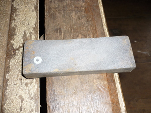

kamanga 
/kamaŋa/
v_rt.
“sharpen_blade”
n.
a sharpening stone
Wrd.Gloss: sharpening_stone
Eng. sharpening stone; grinder; whetstone
Tag. hasaán
Ceb. bairan
OCM: General Tools (412)
Online dict status: -
Usage level: F
v.
for someone (egkamanga, migkamanga/ingkamanga, agent, eg><ø-) to sharpen something (an implement) (egkamangeen, ingkamanga/migkamanga/pigkamanga, patient, eg><en-) with sharpener (igkamanga, instrument, ig><ø-)
Ka egkamanga iyan ka peggamit te batu wey ke simintu naa ne kamanga eyew egmahalang ka igngusngus dutu te batu. Egkaayun ne iyan igngusngus ka panganiban diyè te batu wey egkaayun degma ne iyan igngusngus ka batu diyè te panganiban.
Egkamanga a te ugpit ku eyew egmahalang.
I will sharpen my bolo so that it will be sharp.
Egkamangeen ku ka ugpit su kenad e eg-uteng.
I will sharpen the bolo for it become bluntened.
Egsambey key te sumintu ne kamanga su igkamanga ney te galab.
We want to borrow a (cement) sharpening stone to sharpen a curve knife.
Eng. sharpen, to
Tag. hásà
Ceb. baid
Ilo.: asáen
OCM: General Tools (412)
Online dict status: -
Usage level: M
Updated by: RJH,JLM,TME,QDL
Last updated: 21/Jan/2010
"kamanga" in text "The Barrio Fiesta (Egsahakeen) and Castration"
"kamanga" in text "The Barrio Fiesta (Egsahakeen) and Castration"
This page last updated: 19/May/2012
Copyright © 2009-2010, Matigsalug Language Christian Association, Inc